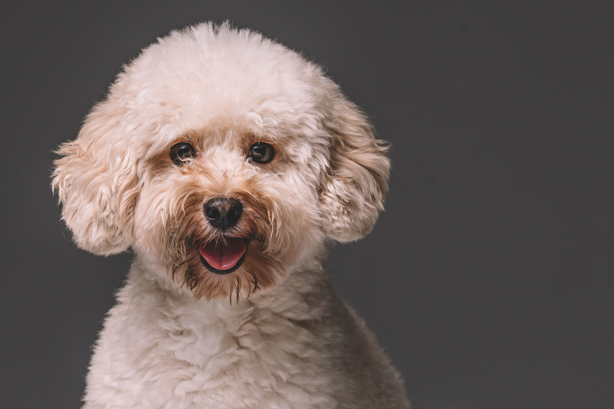

Labrador Retriever
Tamanho: Grande
Temperamento: Amigável, ativo e extrovertido
Expectativa de vida: 10-12 anos
Golden Retriever
Tamanho: Grande
Temperamento: Inteligente, leal e gentil
Expectativa de vida: 10-12 anos

Poodle
Tamanho: Toy, médio ou grande
Temperamento: Inteligente, ativo e orgulhoso
Expectativa de vida: 12-15 anos
Bulldog Inglês
Tamanho: Médio
Temperamento: Calmo, corajoso e amigável
Expectativa de vida: 8-10 anos

Pastor Alemão
Tamanho: Grande
Temperamento: Corajoso, confiável e curioso
Expectativa de vida: 9-13 anos